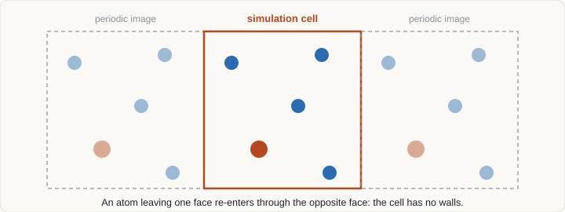

Curriculum/Materials scienceMSE 201
Crystal structures, supercells and periodic boundaries
Almost every atomistic simulation starts by writing down where the atoms are. For crystals, a handful of numbers describes an infinite solid; for defects, the same description is stretched into a finite, repeating box that must be chosen with care.
- Reading time
- about 12 min
- Leads to
- LAB 201: ASE: structures
PHYS 302: Solid state physics
MSE 302: Mechanical behaviour
CMS 501: Density functional theory
CMS 502: Molecular dynamics - Level
- Year 2: core tools
- Describe a crystal as a lattice plus a basis and count atoms, neighbours and packing for common structures.
- Use Miller indices for directions and planes, and relate real and reciprocal lattices.
- Choose a supercell for a point defect, surface or interface, and estimate the defect concentration it implies.
- Apply the minimum-image convention and explain the size effects that periodic boundaries introduce.
1. Lattice and basis#
An ideal crystal is invariant under translation by any vector of a Bravais lattice:
R = n1a1 + n2a2 + n3a3, ni integerswhere a1,2,3 are the primitive lattice vectors. The parallelepiped they span is the primitive cell: the smallest volume that tiles space by translation and contains exactly one lattice point. The crystal is the lattice decorated with a basis, a set of atoms at positions rj inside each cell, usually given as fractional coordinates (x, y, z) between 0 and 1 along the lattice vectors:
position of atom j in cell n: r = Rn + (xja1 + yja2 + zja3)A cell can be described by six numbers: three lengths a, b, c and three angles α, β, γ. Symmetry sorts all lattices into seven crystal systems (cubic, tetragonal, orthorhombic, hexagonal, trigonal, monoclinic, triclinic) and fourteen Bravais lattices once centring is included (primitive P, body-centred I, face-centred F, base-centred C). Adding the basis and its symmetry gives 230 space groups. Symmetry matters computationally: it reduces the number of distinct k-points in electronic-structure calculations and the number of independent elastic constants (3 for cubic, 5 for hexagonal, 21 for triclinic).
Often a conventional cell larger than the primitive cell is used because it shows the symmetry more clearly. The face-centred cubic conventional cell holds 4 lattice points, the body-centred cubic one holds 2.
2. Common structures#
| Structure | Lattice | Atoms per conventional cell | Nearest neighbours | Packing fraction | Examples |
|---|---|---|---|---|---|
| Face-centred cubic (fcc) | cubic F | 4 | 12 | 0.74 | Al, Cu, Ni, Au, austenite (γ-Fe) |
| Body-centred cubic (bcc) | cubic I | 2 | 8 (6 more at 15% larger distance) | 0.68 | α-Fe (ferrite), W, Cr, Mo |
| Hexagonal close-packed (hcp) | hexagonal P, 2-atom basis | 2 (in the hexagonal cell) | 12 | 0.74 at ideal c/a = √(8/3) ≈ 1.633 | Mg, Ti, Zn, Co |
| Diamond cubic | fcc, 2-atom basis | 8 | 4 | 0.34 | Si, Ge, C (diamond) |
| Rock salt (B1) | fcc, 2-atom basis | 8 (4 cation + 4 anion) | 6 (unlike ions) | depends on radii | NaCl, MgO, TiC |
| Perovskite (ABO3) | simple cubic (ideal) | 5 | B: 6 O; A: 12 O | — | SrTiO3, BaTiO3 |
Close packing arises from stacking triangular layers. The sequence ABAB… gives hcp and ABCABC… gives fcc, which explains why the two structures have the same density and coordination but different symmetry, and why stacking faults in fcc metals locally look like hcp. Bcc is less densely packed and has no single close-packed slip plane; the mobility of its screw dislocations depends strongly on temperature, which is the origin of the ductile-to-brittle transition that bcc metals show and fcc metals do not.
Lattice parameters at room temperature are the first numbers to check against any model: Cu fcc a ≈ 3.61 Å, Al fcc 4.05 Å, α-Fe bcc 2.87 Å, Si diamond 5.43 Å. If a calculation or potential reproduces these to within a percent or two, the basic bonding description is plausible; if not, nothing downstream can be trusted.
3. Directions and planes#
Directions are written [uvw]: the smallest integers proportional to the components of the vector in lattice coordinates, with negative values shown by a bar. A family of equivalent directions is written ⟨uvw⟩. Planes use Miller indices (hkl): take the intercepts of the plane with the axes in units of the lattice parameters, invert them, and clear fractions. A family of equivalent planes is written {hkl}. In cubic crystals, [hkl] is perpendicular to (hkl), but this is not true in general for other systems.
The spacing of (hkl) planes in a cubic crystal is
dhkl = a / √(h² + k² + l²)which is used directly in diffraction (Bragg’s law, nλ = 2d sinθ) and to compare simulated structures with X-ray or electron diffraction. Close-packed planes and directions control plasticity: slip occurs most readily on {111}⟨110⟩ in fcc and on {110}, {112} and {123} planes along ⟨111⟩ in bcc. Surface energy also depends on orientation, with close-packed surfaces such as fcc (111) typically lowest.
Hexagonal crystals use four-index Miller–Bravais notation (hkil) with i = −(h + k), which makes equivalent planes look alike.
4. Reciprocal lattice#
Waves in a periodic solid, whether electrons, phonons or X-rays, are best described in reciprocal space. The reciprocal lattice vectors satisfy
ai · bj = 2π δij, i.e. b1 = 2π (a2 × a3) / [a1 · (a2 × a3)] and cyclic permutationsThe Wigner–Seitz cell of the reciprocal lattice is the first Brillouin zone. A key rule: the larger the real-space cell, the smaller its Brillouin zone, so a supercell needs fewer k-points. The reciprocal lattice vector Ghkl = hb1 + kb2 + lb3 is perpendicular to the (hkl) planes and has length 2π/dhkl, which links this section to Section 3.
5. Defects#
Real materials are defined as much by their defects as by their ideal structure, and most of the interesting simulation questions concern them. Defects are classified by dimension.
| Dimension | Defect | Typical simulation question |
|---|---|---|
| 0D (point) | Vacancy, self-interstitial, substitutional or interstitial solute, antisite | Formation energy, migration barrier, binding to other defects, concentration at equilibrium |
| 1D (line) | Edge, screw and mixed dislocations; disclinations | Core structure, Peierls stress, interaction with solutes and precipitates |
| 2D (planar) | Grain boundaries, stacking faults, twin boundaries, phase boundaries, free surfaces | Interface energy, segregation, sliding and migration, fracture energy |
| 3D (volume) | Voids, precipitates, inclusions | Nucleation barrier, coherency strain, growth rate |
A point defect’s equilibrium concentration follows from the competition between the energy it costs and the configurational entropy it gains:
cv ≈ exp( −Ef / kBT ) (times a vibrational-entropy factor)Because the formation energy Ef of a vacancy is of order 1 eV in many metals, equilibrium vacancy fractions near the melting point are about 10−4 to 10−3 and fall steeply on cooling. Computing Ef from DFT or an interatomic potential is one of the most common first tasks in atomistic modelling.
6. Building supercells#
A simulation cell cannot be infinite, so a supercell is built by repeating the unit cell n1×n2×n3 times and then modifying it, for example by removing one atom to create a vacancy. Because the supercell is itself periodically repeated, the defect interacts with its own periodic images. The artefact shrinks as the cell grows, and the cost grows too, so supercell size is a convergence parameter (see the convergence section of the density functional theory page).
The defect concentration implied by a single vacancy in a n×n×n fcc supercell is 1/(4n³):
| fcc supercell | Atoms (before removing one) | Vacancy concentration |
|---|---|---|
| 2×2×2 | 32 | 3.1% |
| 3×3×3 | 108 | 0.93% |
| 4×4×4 | 256 | 0.39% |
| 6×6×6 | 864 | 0.12% |
These are far above the equilibrium concentration, so the vacancies are strongly interacting in small cells: elastic strain fields overlap and the computed formation energy drifts with size. The standard remedy is to repeat the calculation in several sizes and extrapolate, or to use a cell large enough that the result changes by less than the accuracy required. For charged defects in insulators, long-range Coulomb interactions converge very slowly and need explicit correction schemes.
A supercell does not have to be a simple multiple. A general transformation matrix M (integer entries) gives new lattice vectors a′ = Ma, which allows a nearly cubic cell to be built from a hexagonal or primitive fcc cell, or a cell oriented along a chosen crystallographic direction. For dislocations and grain boundaries, the cell axes are chosen along specific directions so that the periodic boundary can accommodate the defect geometry.
Here is how a 4×4×4 copper cell with one vacancy looks in the Atomic Simulation Environment (ASE), a Python library:
from ase.build import bulk
cell = bulk("Cu", "fcc", a=3.61, cubic=True).repeat((4, 4, 4)) # 256 atoms
del cell[0] # one vacancy: 255 atoms
print(len(cell), cell.get_volume())7. Periodic boundary conditions#
With periodic boundary conditions (PBC) the cell is surrounded by an infinite array of copies of itself. An atom that leaves through one face re-enters through the opposite face, so the simulation has no surfaces and a small number of atoms mimics bulk. Follow the highlighted atom in the figure: it leaves on the right and reappears on the left.

Minimum image convention
Each atom should interact with the nearest image of every other atom, not with a distant one. For an orthogonal box of side L, the separation component is wrapped back into the interval [−L/2, L/2]:
Δx ← Δx − L · round(Δx / L)This is only correct if every interaction cutoff rc satisfies rc < L/2 (more generally, less than half the smallest perpendicular width of a triclinic cell). Otherwise an atom could interact with two images of the same neighbour. A typical metallic potential has a cutoff of 5 to 6 Å, so each box edge must exceed about 10 to 12 Å.
What periodicity imposes
- Size limit on correlations. No fluctuation or structure can have a wavelength longer than the box. Near phase transitions, where correlation lengths diverge, results depend strongly on box size.
- Image interactions. Defects, charges and strain fields interact with their images, as in Section 6.
- Net momentum and drift. Total momentum is conserved in MD with PBC and should be set to zero; the centre of mass otherwise drifts.
- Diffusion bookkeeping. To compute diffusion from displacements, positions must be unwrapped (a running count of boundary crossings is kept), otherwise atoms appear to jump across the box.
- Compatibility of the defect with the box. A grain boundary must be compatible with the periodicity in the plane, and a single dislocation cannot be placed in a fully periodic cell because it would leave a net Burgers vector; dislocation dipoles or quadrupoles are used instead, so that opposite dislocations cancel.
8. Surfaces and interfaces#
To model a surface, periodicity is kept in two directions and broken in the third by adding a vacuum layer. This is called a slab model. The slab must be thick enough that the two surfaces do not interact (the middle layers should look like bulk), and the vacuum must be wide enough, often 10 Å or more, that neighbouring slabs do not interact through the vacuum. Surface energy follows from
γ = ( Eslab − N Ebulk ) / (2A)where Ebulk is the energy per atom of the bulk crystal, N the number of atoms in the slab, A the surface area and the factor 2 counts both faces. Using the same computational settings for the slab and the bulk reference is essential, otherwise numerical differences swamp the small difference being measured.
For grain boundaries, two crystals with relative misorientation are joined. Geometric descriptions such as the coincidence site lattice (Σ) count how many lattice points of the two grains coincide: low-Σ boundaries (for example the Σ3 coherent twin) have high symmetry and low energy. A fully periodic cell contains two boundaries (the second appears where the two grains meet across the periodic boundary), so the excess energy is divided by twice the area. Many initial atomic arrangements (rigid-body translations, atom deletion) should be relaxed and the lowest-energy result kept, because boundary structure is a global-optimisation problem.
9. Tools and file formats#
- Building and manipulating: ASE and pymatgen (Python), Atomsk (command line, good for dislocations and polycrystals), VESTA (visual).
- Visualisation and analysis: OVITO (defect and structure identification such as common neighbour analysis and dislocation extraction), VESTA, VMD.
- Common file formats: CIF (crystallographic information file, from experiment databases), POSCAR (VASP), LAMMPS data files, XYZ (plain coordinates), and the formats of Quantum ESPRESSO inputs. ASE reads and converts between most of them.
- Symmetry analysis: spglib (used inside ASE and pymatgen) identifies space groups and primitive cells from coordinates.
- A crystal is a lattice plus a basis. Count atoms and neighbours to sanity-check a structure: fcc has 4 atoms per cubic cell and 12 neighbours, bcc has 2 and 8.
- Miller indices label planes and directions; the reciprocal lattice links real-space cells to diffraction and to k-point sampling.
- Defects are the subject of most simulations. Supercell size is a convergence parameter, and one vacancy in an N-atom cell is a concentration of 1/N.
- Periodic boundaries remove walls but make a defect interact with its own images; every cutoff must be smaller than half the box.
- Surfaces use slabs with vacuum; a grain boundary in a fully periodic cell always comes as a pair.
10. Check your understanding#
How many atoms are in a 5×5×5 bcc supercell, and what is the concentration from one vacancy?
The conventional bcc cell holds 2 atoms, so the supercell has 2 × 125 = 250 atoms. One vacancy gives 1/250 = 0.4%.
Why must a box edge be larger than twice the cutoff radius?
The minimum image convention picks only the nearest copy of each neighbour. If the cutoff exceeded half the box edge, an atom could be within range of two images of the same neighbour, and the force would be counted wrongly or only once.
A surface-energy calculation gives a negative value. What should you check first?
Whether the slab and the bulk reference were computed with identical settings (cutoff, k-point density, number of layers, smearing). Inconsistent settings are the usual cause, because the quantity being computed is a small difference of two large energies.
11. References and further reading#
- Kittel, C., Introduction to Solid State Physics, Wiley.
- Ashcroft, N. W. and Mermin, N. D., Solid State Physics, Saunders.
- Hammond, C., The Basics of Crystallography and Diffraction, Oxford University Press.
- Hirth, J. P. and Lothe, J., Theory of Dislocations, Krieger.
- Larsen, A. H. et al., The Atomic Simulation Environment, J. Phys.: Condens. Matter 29, 273002 (2017).
- Hirel, P., Atomsk: a tool for manipulating and converting atomic data files, Comput. Phys. Commun. 197, 212 (2015).
- Stukowski, A., Visualization and analysis of atomistic simulation data with OVITO, Modelling Simul. Mater. Sci. Eng. 18, 015012 (2010).